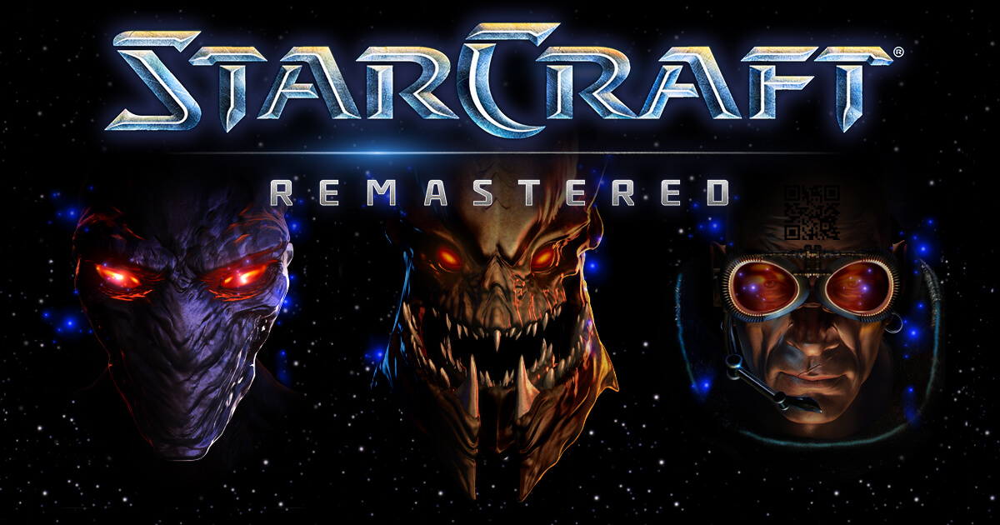

Strategie în timp real este un gen de jocuri video caracterizat prin jocuri de război care au loc în timp real, unde adunarea de resurse, construirea de baze, dezvoltarea tehnologiei și control direct asupra unităților individuale sunt componente cheie.
Jocurile de strategie în timp real nu implică ture ca jocurile pe ture. În schimb, jocul progresează în "timp real"; este un joc continuu spre deosebire de cele pe ture, și toți jucătorii pot da ordine în orice moment, în timp ce cuvântul "strategie" face referință la planificarea unui război la nivel înalt ca armate, campanii, și războaie întregi, în jocuri în timp real se pot da ordine unor unități sau persoane individuale. Părți integrale ale gameplay-ului sunt de asemenea aspectele legate de economie și producție, și cu toate că confruntările militare joacă un rol important, ele sunt foarte stilizate și nu pun accent pe simularea războaielor reale.
1983 - 1992: începuturile
În Regatul Unit, genul a început cu Stonkers de John Gibson, publicat în 1983 de Imagine Software prentru ZX Spectrum, și Nether Earth publicat pe ZX Spectrum în 1987. În America de Nord, primul joc clasificat retrospectiv drept strategie în timp real este The Ancient Art of War(1984), proiectat de Evryware alor Dave și Barry Murry, urmat de The Ancient Art of Warfare at Sea ]n 1987. Unii scriitori consideră Utopia de Don Daglow drept primul joc de strategie în timp real.

Nici unul dintre aceste titluri nu ar fi recunoscut drept strategie în timp real. Totuși, Herzog Zwei pentru Sega Genesis din 1989 și Battle Master pentru Amiga și Atari ST din 1990 sunt probabil cele mai timpurii exemple de jocuri în timp real făcute bine. Strategie în timp real a început să fie recnoscut odată cu scoaterea pe piață a Dune II de la Westwood Studios în 1992. Dune II a fost și primul joc să creeze un format pentru jocurile în timp real care este folosit și în ziua de azi, ca folosirea mouse-ului pentru mișcarea trupelor, și strângerea de resurse.